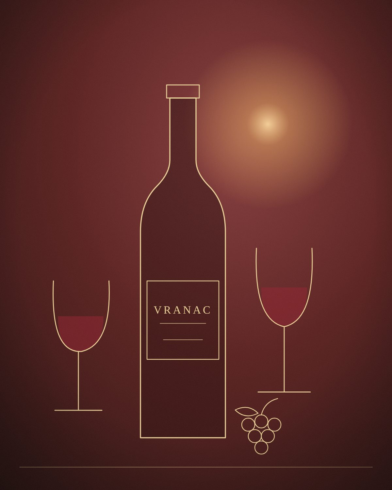

Menuja
Shijet e Santos
Nga verërat te specialitetet e shtëpisë — e gjithë menuja jonë në një vend.
Rezervime
Tavolina juaj ju pret
Rezervoni paraprakisht për darkë dhe për grupe — veçanërisht në fundjavë.

Menuja
Nga verërat te specialitetet e shtëpisë — e gjithë menuja jonë në një vend.
Rezervime
Rezervoni paraprakisht për darkë dhe për grupe — veçanërisht në fundjavë.